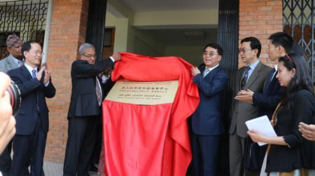

On occasion of the CAS President BAI Chunli’s visit to Tribhuvan University on April 7, 2014, the TPE program
formally launched its center in Kathmandu. The center was established to assist with international scientific
collaboration in the region.
Both the TU Vice Chancellor and the CAS President presided over the inauguration ceremony of the TPE Kathmandu
center. TPE Kathmandu Center acting director Prof. LIANG Eryuan (ITP) briefed the delegates from both CAS and TU
on the academic background for the TPE to establish its Kathmandu center, and introduced major activities and
contributions TPE has made to the scientific and technological development in Nepal. For example, the center has
already contributed to TPE development through educational programs, database construction, and international
research publications. The formal launch of the center will further boost TPE contributions to education and
research in Nepal, the southern Himalayas, and beyond.
The center is currently located within the TU Central Department of Hydrology and Meteorology, with Prof. YAO
Tandong of ITP and Prof. Lochan Devkota of TU Central Department of Hydrology and Meteorology as academic
co-directors. Prof. Liang and TU Associate Professor Tek Bahadur Chhetri are the acting co-directors in charge
of the daily operation of the TPE Kathmandu Center. Both TU and CAS will provide additional support for
facilities and ongoing programs at the TPE Katmandu Center.

Inauguration of TPE center